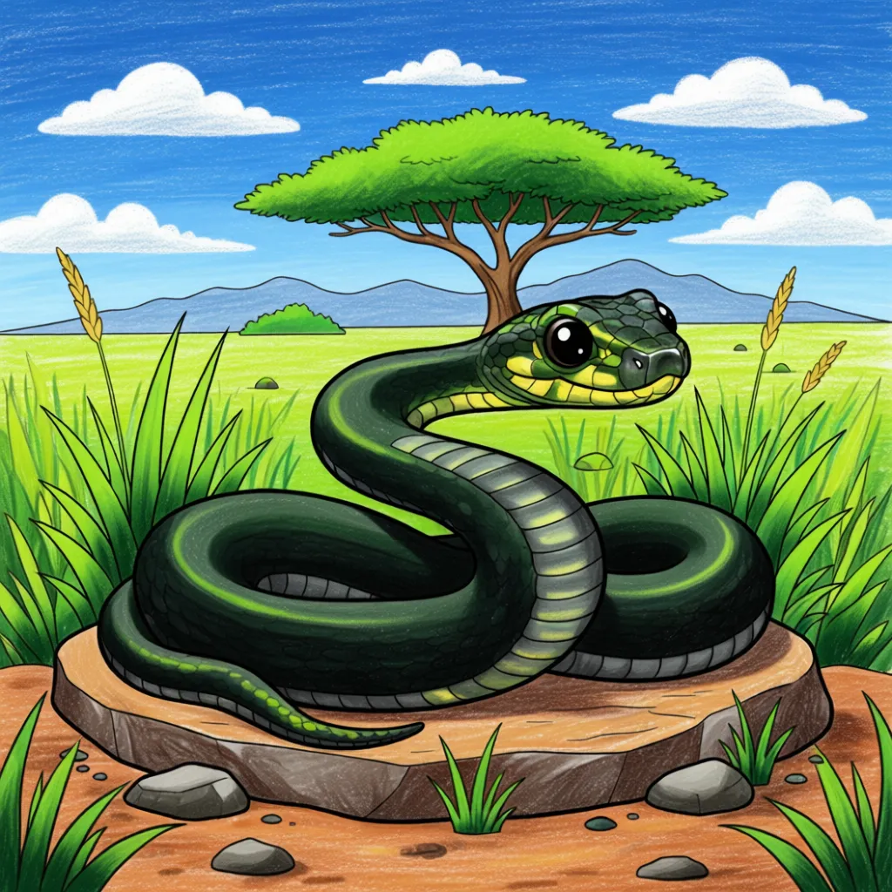

Schwarze Mamba
Dendroaspis polylepis

Wichtige Merkmale
- Die Schwarze Mamba ist eine der schnellsten und gefürchtetsten Schlangen der Welt, bekannt für ihre Geschwindigkeit und ihr starkes Gift.
- Trotz ihres Namens ist ihre Haut meist olivgrün oder grau; der Name kommt von der tintenschwarzen Farbe im Inneren ihres Mundes.
- Mambas leben in Bäumen, verbringen aber Zeit mit der Jagd am Boden und kehren oft jede Nacht in denselben Bau zurück.
Besondere Fakten (Spaßige Fakten!)
- Sie können bis zu 4,3 Meter lang werden und sich mit bis zu 20 km/h bewegen – nur ein Mensch kann schneller laufen!
- Bei Bedrohung zeigt sie eine typische Drohhaltung: Sie flatten ihren Hals zu einer Haube und öffnen ihren schwarzen Mund weit.
- Sie spielen eine wichtige Rolle in ihrem Ökosystem, indem sie Nagetierpopulationen kontrollieren.